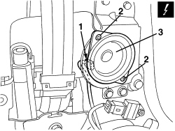

5570T96 REAR SIDE SPEAKER (ONE), LEFT OR RIGHT- R.R
- Path
- Procedures > 55 ELECTRICAL EQUIPMENT > 5570 ACCESSORIES > 5570T CAR RADIO/CAR TELEPHONE/VIDEO > 5570T96 REAR SIDE SPEAKER (ONE), LEFT OR RIGHT- R.R
- Kind
- repair procedure (removal / refitting; the operation number is the code)
- Applies to
- all engines; all production periods
- Interactive page
- https://sloeber94.github.io/elrnDB-aBrrSpdr/en/#/946002452
Applies to: all engines; all production periods
 Removing
Removing
 Refitting
RefittingOp. 7040H38 CENTRE PILLAR UPPER ELEMENT (ONE), LEFT OR RIGHT - R.R
- If working on the left side, remove the courtesy light.
Op. 7040G30 BOOT LIGHT BULB HOLDER - R.R.
Op. 7050A22 REAR SEAT CUSHION - R+R
Op. 7040H42 REAR PILLAR TRIM (ONE), LEFT OR RIGHT- R.R
Op. 7050A15 SPLIT REAR SEAT RIGHT BACKREST - R.R.
- If necessary.
Op. 7050A13 SPLIT REAR SEAT LEFT BACKREST - R.R.
Op. 7040H50 REAR PANEL (ONE), LEFT OR RIGHT - R.R
1. Disconnect the electrical connection.
Description | Component |
|---|---|
LEFT REAR SPEAKER | |
RIGHT REAR SPEAKER |
2. Undo the bolts.
3. Remove the speaker.

Applies to: all engines; all production periods
Refitting
Removing- Check that the speaker is not damaged.
- Position the speaker and secure it using the bolts.
- Connect the electrical connection.
Op. 7040H50 REAR PANEL (ONE), LEFT OR RIGHT - R.R
Op. 7050A13 SPLIT REAR SEAT LEFT BACKREST - R.R.
Op. 7050A15 SPLIT REAR SEAT RIGHT BACKREST - R.R.
Op. 7040H42 REAR PILLAR TRIM (ONE), LEFT OR RIGHT- R.R
Op. 7050A22 REAR SEAT CUSHION - R+R
Op. 7040G30 BOOT LIGHT BULB HOLDER - R.R.
Op. 7040H38 CENTRE PILLAR UPPER ELEMENT (ONE), LEFT OR RIGHT - R.R
- Check that the dismantled parts are working.
Applies to: engines: 2.2 JTS, 3.2 JTS; all production periods; only with equipment: Spider
Removing
Refitting- Prepare the hood for the operation.
Op. 0010T79 HOOD HYDRAULIC SYSTEM - DISCHARGE AND RESTORE PRESSURE
Op. 7040H21 MOULDING ON PASSENGER COMPARTMENT REAR TRIM - R.R.
Op. 7040H22 PASSENGER COMPARTMENT REAR TRIM (SPIDER) - R.R.
Op. 7040L31 REAR ODDMENTS COMPARTMENT - R.R.
Op. 7040L51 REAR ODDMENTS COMPARTMENT SUPPORT - R.R.
Op. 7040H50 REAR PANEL (ONE), LEFT OR RIGHT - R.R
Op. 5570T93 REAR SIDE LOUDSPEAKER. (ONE), LEFT OR RIGHT - R.R. WITH REAR DOOR PANEL OR WING. REMOVED
Applies to: engines: 2.2 JTS, 3.2 JTS; all production periods; only with equipment: Spider
Refitting
RemovingOp. 5570T93 REAR SIDE LOUDSPEAKER. (ONE), LEFT OR RIGHT - R.R. WITH REAR DOOR PANEL OR WING. REMOVED
Op. 7040H50 REAR PANEL (ONE), LEFT OR RIGHT - R.R
Op. 7040L51 REAR ODDMENTS COMPARTMENT SUPPORT - R.R.
Op. 7040L31 REAR ODDMENTS COMPARTMENT - R.R.
Op. 7040H22 PASSENGER COMPARTMENT REAR TRIM (SPIDER) - R.R.
Op. 7040H21 MOULDING ON PASSENGER COMPARTMENT REAR TRIM - R.R.
- If it has been discharged, restore the pressure for the hydraulic hood system.
Op. 7030H03 HOOD MANUAL OPENING FOLLOWING DEACTIVATION OF HYDRAULIC SYSTEM - CARRY OUT PROCEDURE
Topics linked from this page (16)
- 0010T79 HOOD HYDRAULIC SYSTEM - DISCHARGE AND RESTORE PRESSURE
- 5570T93 REAR SIDE LOUDSPEAKER. (ONE), LEFT OR RIGHT - R.R. WITH REAR DOOR PANEL OR WING. REMOVED
- 7030H03 HOOD MANUAL OPENING FOLLOWING DEACTIVATION OF HYDRAULIC SYSTEM - CARRY OUT PROCEDURE
- 7040G30 BOOT LIGHT BULB HOLDER - R.R.
- 7040H21 MOULDING ON PASSENGER COMPARTMENT REAR TRIM - R.R.
- 7040H22 PASSENGER COMPARTMENT REAR TRIM (SPIDER) - R.R.
- 7040H38 CENTRE PILLAR UPPER ELEMENT (ONE), LEFT OR RIGHT - R.R
- 7040H42 REAR PILLAR TRIM (ONE), LEFT OR RIGHT- R.R
- 7040H50 REAR PANEL (ONE), LEFT OR RIGHT - R.R
- 7040L31 REAR ODDMENTS COMPARTMENT - R.R.
- 7040L51 REAR ODDMENTS COMPARTMENT SUPPORT - R.R.
- 7050A13 SPLIT REAR SEAT LEFT BACKREST - R.R.
- 7050A15 SPLIT REAR SEAT RIGHT BACKREST - R.R.
- 7050A22 REAR SEAT CUSHION - R+R
- P030 LEFT REAR SPEAKER
- P031 RIGHT REAR SPEAKER
Topics that link to this page (17)
- N012 POOR RADIO RECEPTION
- N060 CENTRE CONSOLE AUDIO NOT WORKING
- N061 IRREGULAR OPERATION OF VOICE RECOGNITION
- N063 THE TELEPHONE AUDIO CANNOT BE HEARD
- S060 REAR CREAKING
- E3510 RADIO - WIRING DIAGRAM
- E3510 RADIO - COMPONENT LOCATION
- E3510 RADIO - WIRING DIAGRAM
- E3510 RADIO - COMPONENT LOCATION
- E3510 RADIO - WIRING DIAGRAM
- E3510 RADIO - COMPONENT LOCATION
- E3510 RADIO - WIRING DIAGRAM
- E3510 RADIO - COMPONENT LOCATION
- E3510 RADIO - WIRING DIAGRAM
- E3510 RADIO - COMPONENT LOCATION
- E3510 RADIO - WIRING DIAGRAM
- E3510 RADIO - COMPONENT LOCATION